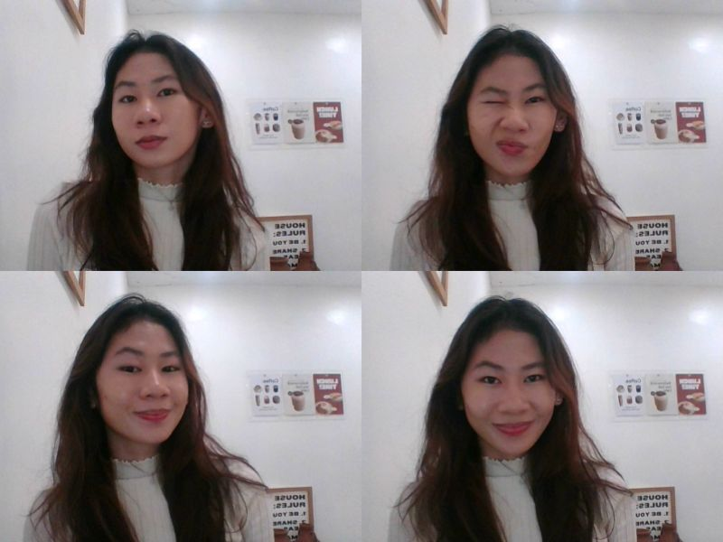
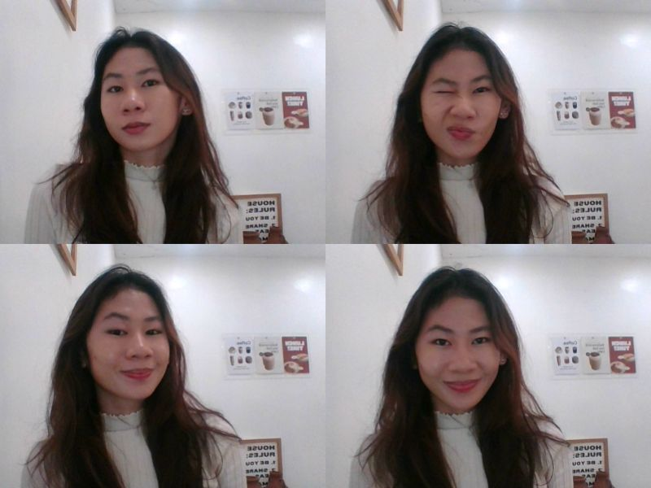

Blog
This is where I share my thoughts and experiences.
A Glimpse Into My World: A Little Bit of Everything and a Lot of Fun
Hi there! My name is Giacinta, and I’m the second child in a family of two siblings. I have an older brother who’s six years older than me — basically, the perfect age gap for some solid sibling banter.
Now, let’s dive into what makes me 'me'. First things first, I’m an anime lover. I can proudly say that I’m an otaku, and if you’ve ever heard of Moriarty the Patriot, you’ll know exactly why I’m obsessed. My favorite character? William James Moriarty. He’s a genius, charming, and just a little bit wicked (which is, let’s be honest, a great combo). If I could join him in one of his schemes, I’d probably take a seat in his villainous mastermind chair and strategize the perfect heist... or maybe just hand him a cup of tea.
When I’m not watching anime, you’ll find me curled up with a novel in hand. I don’t have a specific genre that I stick to — I’ll read anything and everything. My bookshelf? Well, it’s more like a mini library at this point with over 30 novels. I could tell you about each one, but let’s save that for another post (or two, or three... you get the idea).
I ’ve also got a soft spot for music. My favorite jam? Always by Bon Jovi. Seriously, it’s the anthem of my heart. I also adore the mellow, dreamy vibes of the band Cigarettes After Sex. Their music is like an auditory hug for my soul. If I’m feeling chill, you can bet I’ll have their tunes on repeat — it’s the perfect background to both reading and reflecting on life.
And when it comes to food, well... you could call me the queen of comfort food, especially when it comes to instant noodles. No joke, I could eat them for every meal and be perfectly content. Don’t ask me how many packs I’ve got in my pantry right now, because it might be a little embarrassing.
To sum it all up, I’m a mix of anime, books, music, and a whole lot of noodle love. Life is about embracing the little things, and for me, that’s a perfect day spent with my favorite anime, a good book, and a bowl of noodles.
Thanks for taking the time to peek into my world! And hey, if you ever want to talk about anime, music, or noodles (because who wouldn’t?), I’m always up for a good chat.
Anime Review: Moriarty the Patriot – Brilliant Schemes, Handsome Villains, and Plot Twists Galore
If you’ve ever wondered what happens when you take the classic Sherlock Holmes story and flip it on its head, Moriarty the Patriot is here to answer that question — and it’s a thrilling, stylish, and occasionally murderous answer. Seriously, this anime is like if Sherlock had a bad boy rival who was somehow cooler, smarter, and, let’s face it, way more attractive. Who knew villains could be so charming?
Let’s talk about the star of the show: William James Moriarty. Forget everything you thought you knew about villains, because Moriarty is here to rewrite the rulebook. He’s not some mustache-twirling baddie. No, no. He’s a suave, brilliant, morally complex mastermind who might just make you question your entire sense of right and wrong. The guy is gorgeous, too. I mean, if you’re into tall, dark, and handsome with a side of “I’ll destroy the corrupt social system just because I can,” then he’s your guy. Every scene he’s in just screams “I’m the villain, but you kinda love me anyway.”
But what really makes this anime shine? It’s the mind-blowing, jaw-dropping schemes! Every episode feels like Moriarty is one step ahead of everyone (even us, the viewers), and honestly, it’s a little exhausting trying to keep up. You’ll find yourself on the edge of your seat, waiting to see how he’ll outsmart his enemies this time — and don’t even get me started on the twists. Oh, the twists! You’ll be watching one moment thinking, “I have this all figured out,” and then BAM, Moriarty pulls off some next-level genius move that makes you rethink your entire life. It’s a rollercoaster of emotions, and you’re just along for the ride.
The art style? Chef’s kiss. Gorgeous, classy, and packed with all the drama you need. Every scene looks like it was pulled from a Victorian-era fashion magazine, but with more schemes and less tea drinking. The character designs are on point — especially Moriarty. I mean, I would definitely let him give me a lecture on social reform... or, you know, whatever villainous plans he has. But enough about his good looks, right? (Just kidding, we can never have enough of that.)
And don’t think this anime is just eye candy and clever plots. It’s got heart. Even though Moriarty is, well, not exactly a “good guy,” you’ll find yourself rooting for him and his crew. His moral compass is definitely a bit wobbly, but you can’t help but admire his passion to take down a broken system. It’s like watching a mastermind who could have been a superhero if he wasn’t so... intense.
In short, Moriarty the Patriot is a delightful mix of action, suspense, and just the right amount of morally gray characters. If you love a story that makes you question your loyalties, while also wondering why the villain has to be so incredibly good-looking, this is the anime for you. Get ready for a wild ride of clever plans, handsome villains, and so many twists that your brain might just short-circuit. Trust me, Moriarty will steal your heart, even if he’s out to steal everything else.
Top 5 Anime Recommendations You Can't Miss!
If you're looking for something to binge-watch and you're not sure where to start, I’ve got you covered! Here are five anime that will keep you at the edge of your seat, whether you’re into mystery, action, sports, or magic. These shows have it all — from genius masterminds to intense battles, heartwarming moments to epic fights. So, grab your snacks, get comfy, and dive into these must-watch anime!
-
Moriarty the Patriot
First up is Moriarty the Patriot. If you’ve ever wondered about the infamous William James Moriarty and his genius mind, this anime is your perfect introduction. Instead of focusing on Sherlock Holmes, this anime gives us a glimpse into the life of Moriarty, a brilliant strategist who has a very different sense of justice. He’s a villain, but not in the traditional sense — his methods are as brilliant as they are ruthless. With its gripping storylines, jaw-dropping twists, and, let's be real, the fact that Moriarty is absolutely gorgeous, this is one anime that will keep you guessing and craving more. A thrilling ride that blends action, suspense, and a touch of moral ambiguity!
-
Attack on Titan
Next, we have the epic Attack on Titan (Shingeki no Kyojin). If you haven't seen it yet... what are you waiting for? This anime is an emotional rollercoaster set in a world where humanity is on the brink of extinction due to giant humanoid creatures known as Titans. The action is absolutely intense, but it’s the character development and plot twists that will truly pull you in. From the heart-wrenching moments to the shocking reveals, Attack on Titan doesn’t hold back. Plus, the animation and battle sequences are top-tier. Trust me, you’ll be glued to the screen, unable to stop watching until the very end.
-
Haikyuu!!
If you're in the mood for something more uplifting but just as intense, Haikyuu!! is the anime for you! This sports anime will have you cheering for the underdogs in no time. It follows the story of Shoyo Hinata, a short kid with big dreams of becoming a volleyball champion despite his height disadvantage. The show is packed with high-energy matches, heartwarming teamwork, and some truly hilarious moments. Haikyuu!! will make you laugh, cry, and leave you inspired to get out there and chase your own dreams — volleyball or not! It's a perfect mix of drama and motivation, with a side of heart.
-
Jujutsu Kaisen
For those of you who are all about epic fights and powerful sorcery, Jujutsu Kaisen will definitely be your new favorite. This anime follows Yuji Itadori, a high school student who gets caught up in the world of curses after swallowing a cursed object (a finger, to be specific). What follows is an explosive, action-packed journey of curses, sorcerers, and some jaw-dropping fight scenes. The animation is insane, the characters are super likable (hello, Gojo Satoru!), and the fight choreography will make you wonder how they made it look so smooth. Plus, the mix of humor and intense moments keeps you on your toes throughout the series.
-
Black Clover
Last but definitely not least, Black Clover is an anime that mixes magic, action, and a whole lot of determination. It follows Asta, a boy born without magic in a world where magic reigns supreme. Despite this, Asta doesn’t give up on his dream of becoming the Wizard King. Packed with epic battles, rivalries, and moments of pure heart, Black Clover will have you rooting for Asta every step of the way. The character growth is incredible, and the story just keeps getting more and more exciting with each episode. Plus, the magic system in this anime is super fun and unique!
 
